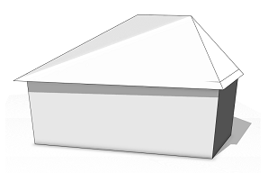

roofHip
Synopsis
roofHip(angle)
roofHip(angle, overhang)
roofHip(angle, overhang, even)
roofHip(valueType, value)
roofHip(valueType, value, overhang)
roofHip(valueType, value, overhang, even)
Parameters
- valueType (selstring)
Type of roof generation (byAngle | byHeight). - value (float)
Angle or height of the roof-planes as specified by valueType. - angle (float)
Angle of the roof-planes (generation byAngle). - overhang (float)
Overhang distance, measured perpendicular to the shape edges (on the roof). - even (bool)
Whether to make the ridges even or not. If true, non-planar faces originate.
The roofHip operation builds a hip roof perpendicular to each face of the current shape's geometry. At every edge, a plane is generated with a given angle or height wrt. the polygon plane. All planes are cut with each other to form the roof faces.
If overhang is set, the roof faces overlap the original shape by this distance. Overhang distances are measured perpendicular to the shape edges (on the roof planes).
If even is set to true, the gable edges are forced to be horizontal. In this case, non-planar roof faces originate.
The connectivity of the roof mesh is optimized for trim plane generation to cut bricks inserted into the roof planes (see examples below).
Scope
The scope orientation is set in the following way:
- x-axis direction is kept as much as possible (old x-axis is projected to plane orthogonal to face normal of the first face)
- y-axis along the face normal of the first face
- z-axis normal to the two above
Related
- envelope operation
- extrude operation
- offset operation
- roofGable operation
- roofPyramid operation
- roofShed operation
- taper operation
Examples
Simple Hip Roof
A basic hip roof is generated on top of an extruded L-lot.
Lot --> extrude(10) Mass
Mass --> comp(f) { top: Top | all: X }
Top --> roofHip(30, 2) Roof
A hip roof with roof slope 30 degrees is built on top of an extruded L-lot.
The overhang distance is set to 2. Note the setting of the pivot and scope.
|
|
Roof --> set(trim.horizontal, true)
comp(f) { all : X }
After a component split, each roof face contains trim planes to cut bricks on insertion.
Note that per default there are no horizontal trim planes at the ridges. To enable them, set(trim.horizontal, true) is used in front of the component split (details). |
Note that there is exactly one roof face perTop shape edge. Unfortunately in the images it seems like the overlap is in a separate face. However, the simple reason for this is that the edges of the shapes in behind bleed through.
Even Hip Roof
This example demonstrates the difference between a standard and an even hip roof built on a trapezoid-lot.
Lot --> extrude(10) Mass
Mass --> comp(f) { top: Top | all: X }
Top --> roofHip(45, 1, false) Roof
A hip roof with roof slope 45 degrees is built on top of
an extruded trapezoid-lot. The overhang is set to 1. Note that the ridge is uneven.
|
|
 |
Top --> roofHip(45, 1, true) RoofWhen using the above rule for theTop shape, the ridge vertices are set to the average height, making the hip roof even. The roof faces are non-planar now. |
For many shapes, ridges get implicitly even and hence the even option doesn't change anything.
Copyright ©2008-2017 Esri R&D Center Zurich. All rights reserved.